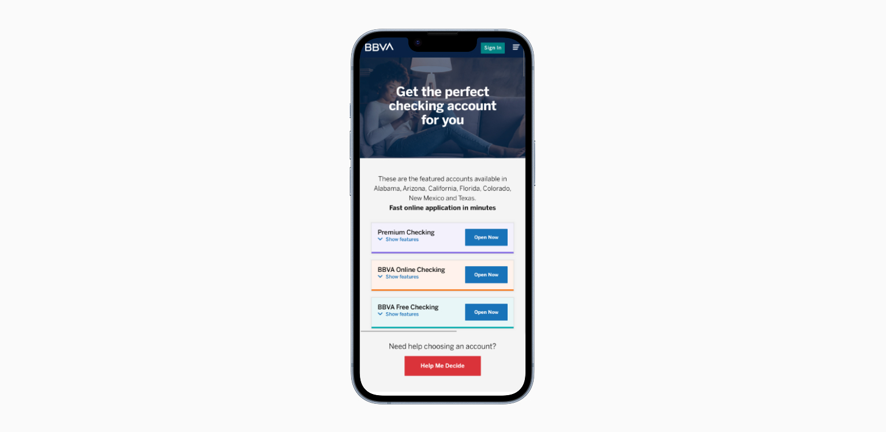
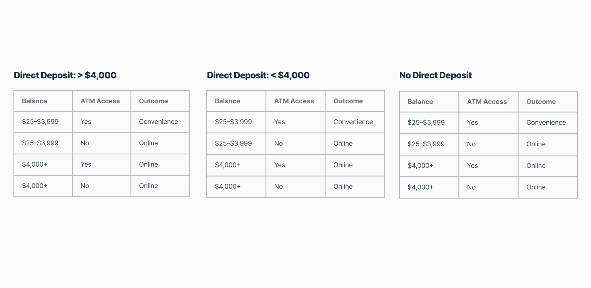
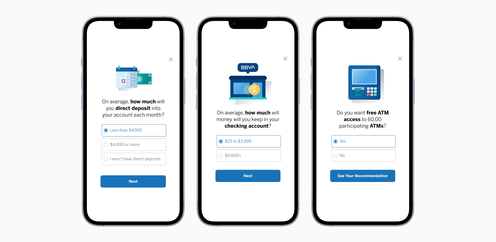
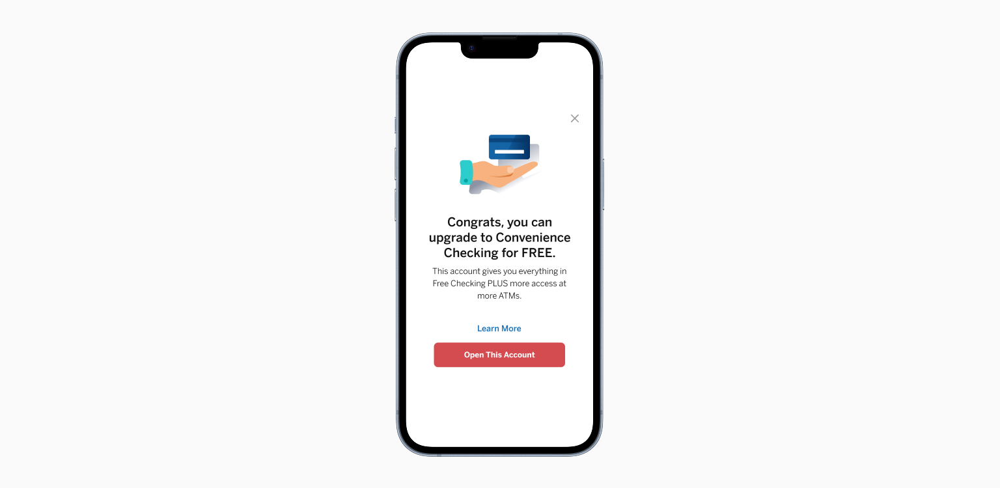

BEHAVIORAL ECONOMICS
BBVA Help Me Decide

BBVA Help Me Decide tool
IMPACT & RESULTS
Better guidance created measurable outcomes.
incremental deposits
By guiding customers toward accounts that better matched their financial behavior, the Help Me Decide wizard contributed $2.7 million in incremental deposits, directly addressing the deposit loss the business had been experiencing at the product selection stage.
Redesign produced a reusable pattern
The wizard became part of the BBVA design system and was adopted as a reusable pattern for subsequent product selection experiences across the platform.
Recognition beyond the product
The tool was cited in behavioral economics case studies and recognized internally and externally as a strong applied example of decision science in financial product design.
WHY THIS MATTERED
A product mismatch was quietly costing the business.
BBVA offered a well-structured lineup of checking accounts, but with the majority of customers arriving on mobile, the selection experience was failing them at the most critical moment. Customers were consistently choosing the free checking option not because it matched their needs, but because the word "free" dominated their attention and short-circuited meaningful comparison.
The business impact was significant. Customers were landing in accounts misaligned with their financial behavior, creating long-term lifecycle problems and costing BBVA millions in lost deposits from higher-value account tiers. Marketing pressure to lead with "free" was compounding the problem rather than solving it.
THE FREE PROBLEM
One word was overriding every other decision.
Very Similar Accounts
BBVA's account lineup had real, meaningful differences but customers could not see them. When presented side by side, the accounts felt nearly identical, leading to decision paralysis or default behavior. The path of least resistance was always the free option.
The Anchoring Effect
Research confirmed what behavioral economics predicts: once customers encountered the word "free," it anchored their entire decision. Other accounts, even those significantly better suited to their financial profile, were ignored. This was not a marketing copy problem. It was a cognitive architecture problem baked into the flow.
Creative Latitude
Rather than being locked into existing components, I had the freedom to create new ones. Brand colors, typography, and core design language remained consistent with BBVA's system, but the Help Me Decide wizard required purpose-built components that did not exist yet. This was an opportunity to design within the brand while extending it, not just applying what was already there.
DECISION ARCHITECTURE
Behavioral science diagnosed the real problem.
Behavioral Economics as Foundation
I grounded the design approach in anchoring bias, choice overload, and progressive commitment, then audited major bank account selection flows to pressure-test those frameworks against real products. The audit confirmed the opportunity: most banks defaulted to flat comparison tables with no personalization. The behavioral lens gave me a principled basis for doing something different.
User Research Insights
Testing revealed three consistent signals across sessions. Customers felt overwhelmed when comparing multiple similar accounts simultaneously. The selection step was the most confusing moment in the new account application. Personalized guidance felt helpful rather than manipulative when it was framed around the customer's situation, not the bank's product hierarchy.
The Wizard Structure
Rather than showing all accounts at once, the flow guided customers through a multi-step wizard. Each step asked a single question, collapsed everything else, and moved forward only when the customer was ready. This structure gave customers a sense of guided momentum and reduced the cognitive burden of comparing similar accounts all at once.

The research mapped every decision point before a single screen was designed.

Each step asked one question, collapsed everything else, and moved forward only when the customer was ready.
ONE RIGHT ACCOUNT
How the wizard worked.
Instead of leading with the product catalog, the wizard led with the customer. Three steps mapped to meaningful behavioral differentiators in BBVA's account structure: direct deposit setup, active usage patterns, and savings intent. Based on their responses, customers received a single recommended account with a plain-language explanation of why it matched them.
Three steps was a deliberate choice. Enough for customers to feel the recommendation was earned, not enough to feel like an interrogation.
Legal disclosures, account details, and secondary information were available on demand. Primary actions were immediately visible. This preserved full compliance while dramatically reducing the cognitive weight of the page. Because the components were purpose-built for this wizard, each step could be designed around the exact decision being made rather than forced into a pre-existing pattern.

A single recommended account with a plain-language explanation of why it matched them.
REFLECTION
What I'd still want to know.
The wizard answered which account, but not whether that answer held. I would want longitudinal sessions at 60 to 90 days post-open to understand whether recommendations led to genuine fit or eventual switching. I am also curious whether three questions work equally well for a first-time account holder versus a returning customer, and would prioritize that segmentation if the product continued to evolve.